«ЗЕРДЕ» РЕСПУБЛИКАЛЫҚ ЗЕРТТЕУ ЖОБАЛАРЫ МЕН ШЫҒАРМАШЫЛЫҚ ЖҰМЫСТАРЫНЫҢ КОНКУРСЫ · ОБЛЫСТЫҚ КЕЗЕҢ
Сарысудың екінші өмірі: қалдықтан пайдалы өнімге
Экология, адам денсаулығы және психология
Автор: Айназ, 7-сынып
Шифр: ______
Ірімшік жасағанда қалатын сарысу — төгілетін қалдық па, әлде пайдалы шикізат па? Тәжірибемен тексердік.
Тәжірибелерді көру ↓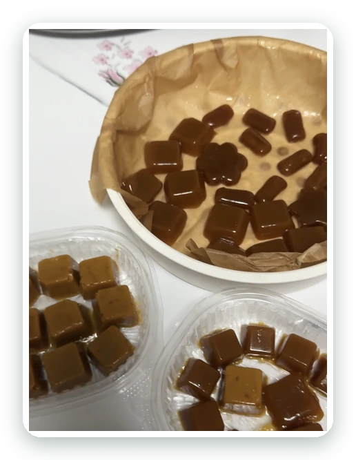
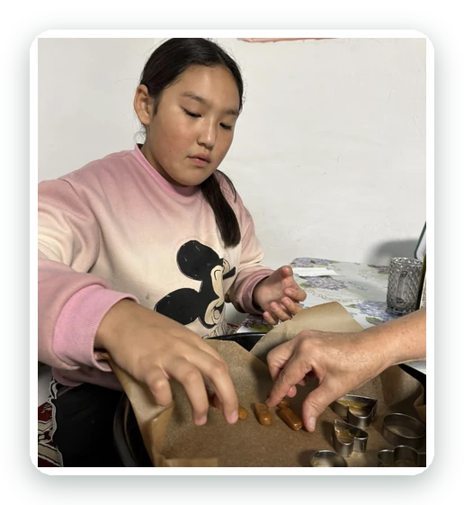
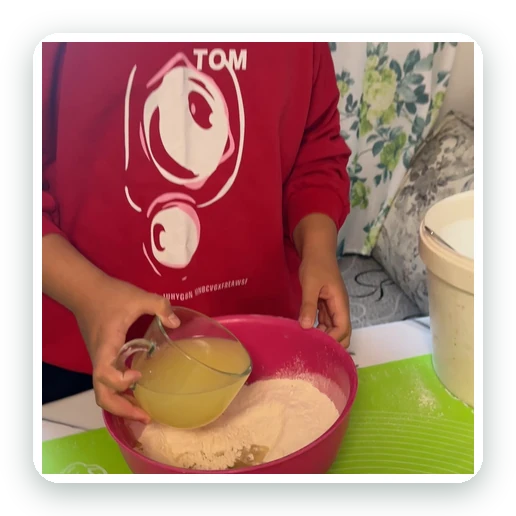
Сарысу көбіне төгіліп кетеді
- 10 л сүттен ≈ 1 кг ірімшік шығады, ал ≈ 9 л сарысу қалады.
- Сарысуда ақуыз, лактоза және минералдар бар.
- Төгілген сарысу су мен топыраққа жүктеме түсіреді.
сарысуды төгіп тастайды
қалай пайдалануды білмейді
адам онлайн сауалнамаға қатысты
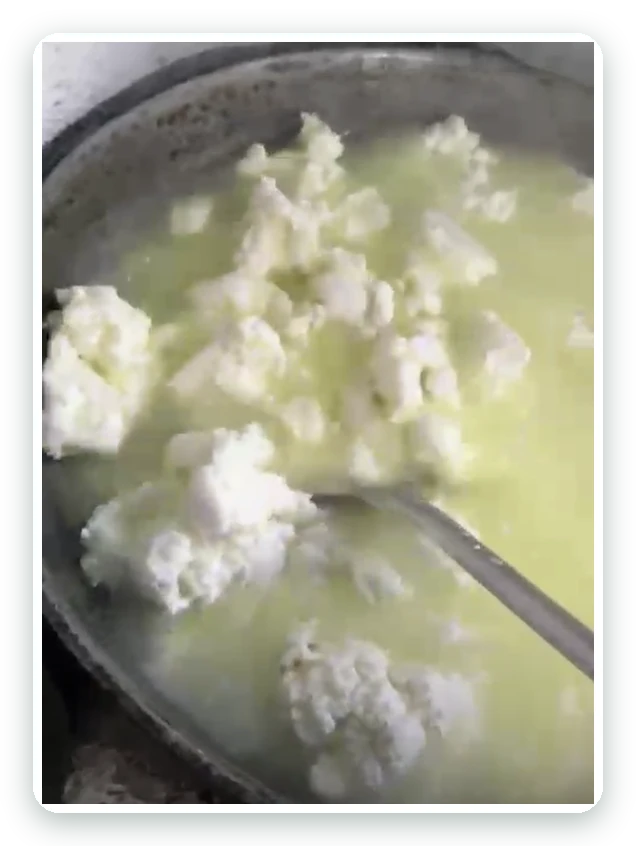
Мақсаты мен міндеттері
Сарысуды қалдық емес, пайдалы шикізат ретінде қолдануға болатынын тәжірибемен тексеру.
Болжам: сарысу тұрмыс пен тағамда жарайды
Сарысу неден тұрады?
Орташа шамалар; нақты құрам сүтке және ірімшік технологиясына байланысты өзгереді.
Тәтті сарысу
Ірімшікті ұйытқы ферментпен ұйытқанда алынады. рН ≈ 6,0–6,6, дәмі жұмсақ.
Қышқыл сарысу
Сүзбені қышқылмен ұйытқанда алынады. рН ≈ 4,3–4,6, дәмі ащымтал.
Сарысу қалай пайда болады?
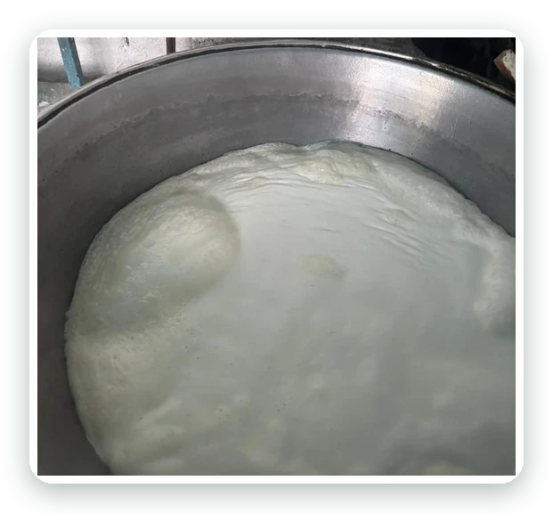
1Сүт қайнайды
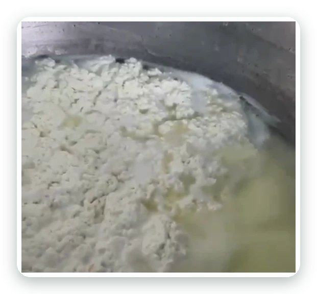
2Сүт ұйып, ірімшік бөлінеді
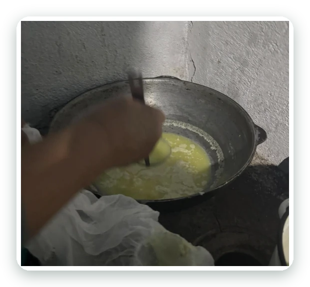
3Қалған сұйықтық — сарысу
Сарысуды қайда қолдандық?
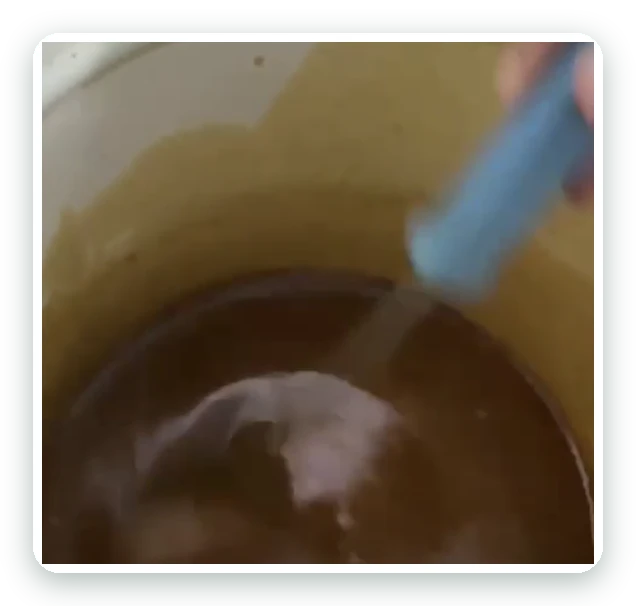
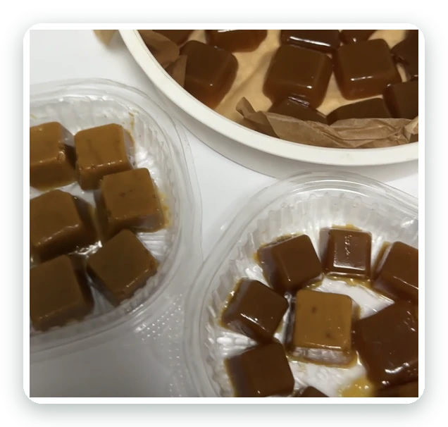
1-тәжірибе: 100 г қант — масса қатпай, шәрбат күйінде қалды. 2-тәжірибе: 300 г қант — ирис шықты.
Қант: 300 г (100 г/л) • шамамен 50 дана
Шамалау: 3 л сарысудан ≈ 50 дана шыққан қатынас бойынша; конфет көлеміне қарай өзгереді.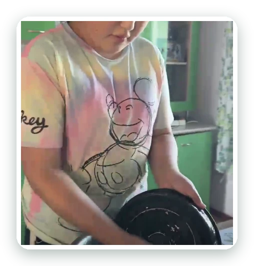
Сарысудың әлсіз қышқыл ортасы мен жылы сұйықтық қатқан қалдықты жұмсартуы мүмкін (болжам). Жуғаннан кейін ыдысты таза сумен шаю керек.
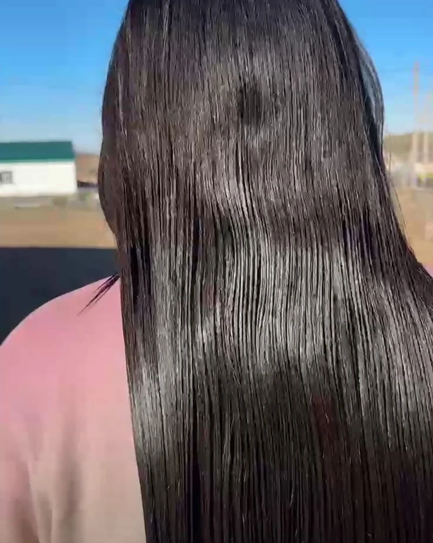
Жуғаннан кейін таза жылы сумен жақсылап шаю қажет.
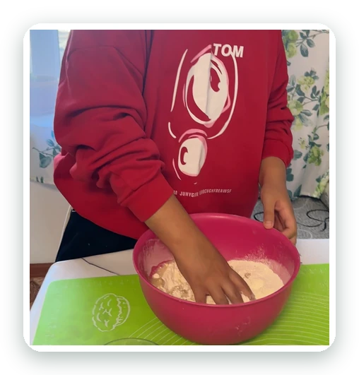
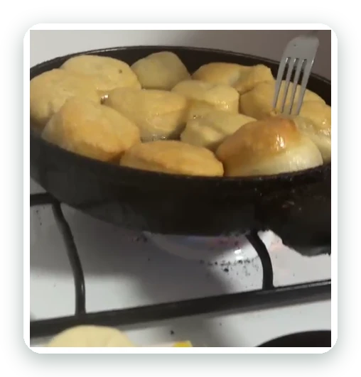
Қамыр су немесе сүттің орнына сарысумен иленді. Алғашында бауырсаққа ашытқы қоспадым, ол тығыз болды; аз мөлшерде ашытқы қосып, үлпілдетіп пісірдім.
Жыл бойғы жұмыс: 2025 – 2026
Әр жазбаны басыңыз — не істегенім шығады.
15–30.10.2025Идея туды, тақырып бекітілді
Үйде сарысуды төгейін деп жатқанымда, апам «Төкпе, бұл қалдық емес» деді. Тақырып бекітіліп, бір жылдық жоспар құрылды.
10–25.11.2025Сарысуды қайнатып бақылау
Қоспасыз сарысу қоюланып, кәмпитке айналмады.
05–20.12.2025Кітапханадан мәлімет
Сарысу құрамын (ақуыз, дәрумен, кальций, магний, фосфор) оқыдым.
22.12.2025Онлайн сауалнама
Сауалнама сұрақтары мен кодын жасанды интеллекттен (ChatGPT) алдым, сайтқа салдым. 117 қатысушы.
12–26.01.2026Ғаламтордан мәлімет
Ірімшік пен сарысудың құрамы мен қолданылуын іздедім.
08–22.02.2026Ирис рецептін іздеу
Сарысу мен қанттың нақты мөлшерін тәжірибемен анықтауды шештім.
10–24.03.2026Шашқа әсерін тексеру
Шаш жұмсарды, жылтырады (бір адамның жеке бақылауы).
06–20.04.2026Ирис, 1-тәжірибе
100 г қантпен масса қатпай, шәрбат болды. Сәтсіз: қант аз.
25.04.2026Ұсақ бауырсақ пен печенье
Ашытқысыз бауырсақ тығыз болды; аз ашытқы қосып, үлпілдеттім.
11–27.05.2026Ирис, 2-тәжірибе
3 л сарысу + 300 г қант, баяу отта 1,5–2 сағат: ≈ 50 дана ирис.
08–22.06.2026Ыдыс жуу
Қатқан кір мен май қатты ысқыламай тез кетті.
05–20.07.2026Баяндама мен слайд дайындау
Материалдарды реттедім; жасанды интеллект құралдары да қолданылды (декларацияда көрсетілген).
02.10.2026Күзгі жәрмеңке
Ірімшіктен 2500 + иристен 400 = 2900 теңге.
01–07.10.2026Қорғауға дайындық
Көрме материалдарын реттедім, жетекшімен жаттықтым.
Жобаның бейнесі
117 адам не дейді?
Сен қалай жауап берер едің?
Жауаптарың ешқайда жіберілмейді, тек экранда салыстырылады.
Күзгі жәрмеңке: 2900 теңге
Сарысу — қалдық емес, құнды ресурс!
Не байқадық
- Болжам негізінен расталды: ирис, ыдыс жуу, қамыр және шаш жуу бақылаулары оң нәтиже берді.
- Сауалнама: адамдардың көбі сарысуды төгеді және қалай пайдалануды білмейді.
- Сарысудан жасалған ирис конфеті жәрмеңкеде сатылды.
Шектеулер
- Тәжірибелер шағын көлемде жасалды.
- Шаш бақылауы — бір адамның сезімі.
- рН өлшенбеген, сақталу мерзімі зерттелмеген.
- Сауалнама ыңғайлы таңдамаға негізделген.